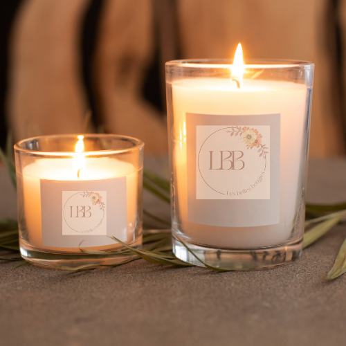
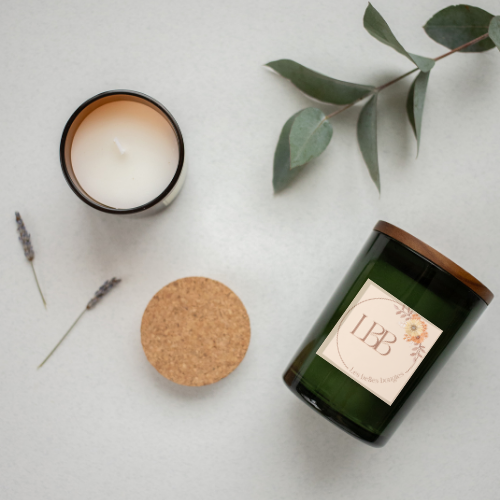
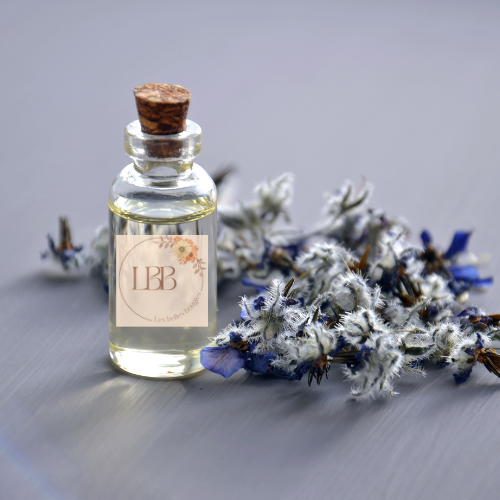
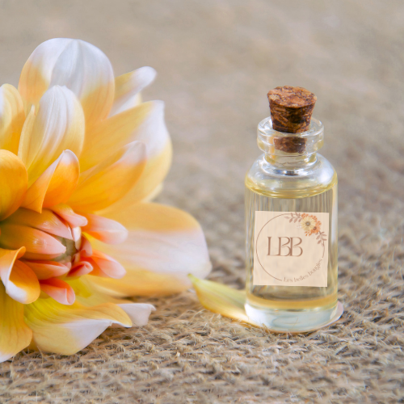

Bougie classique vanille
500g
La bougie est dotée d'un couvercle en métal. Celui-ci peut être utilisé comme socle ou pour fermer la bougie. Vegan, composée d'un mélange de cire de soja, durée de combustion de 70 heures.

Bougie parfumée menthe
500g
La bougie est dotée d'un couvercle en métal. Celui-ci peut être utilisé comme socle ou pour fermer la bougie. Vegan, composée d'un mélange de cire de soja, durée de combustion de 70 heures.

Huile essentielle Lavande
10ml
Incontournable de la trousse d'urgence, cette huile aux propriétés régénérantes et réparatrices s'utilise traditionnellement en cas de petits bobos ou piqûres d'insectes.

Huile essentielle Inule
10g
Connue pour ses propriétés puissantes sur la sphère respiratoire, cette huile essentielle est traditionnellement utilisée pour sa contribution en cas d'inconforts respiratoires.